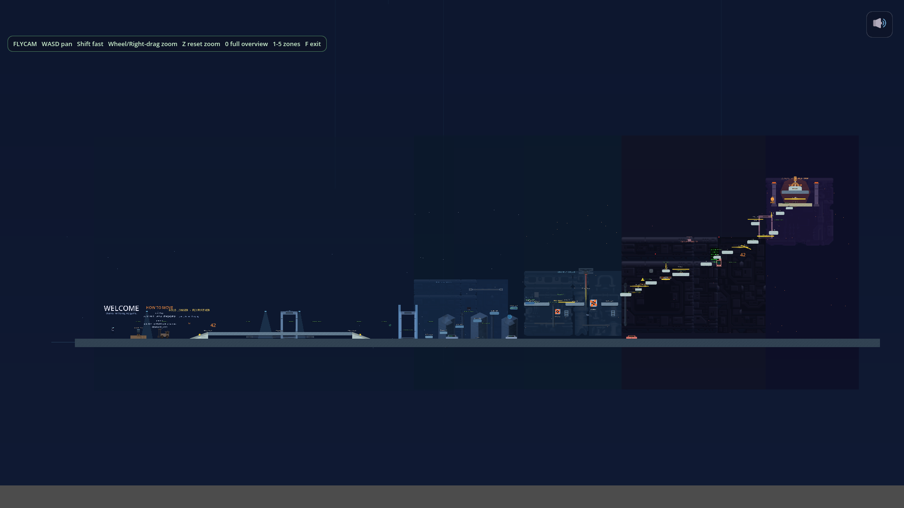
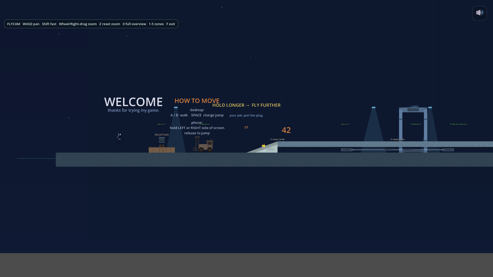
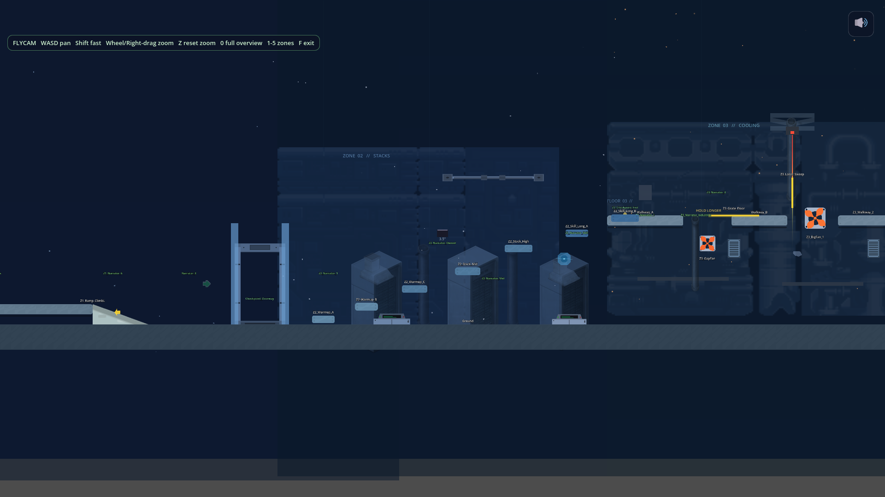
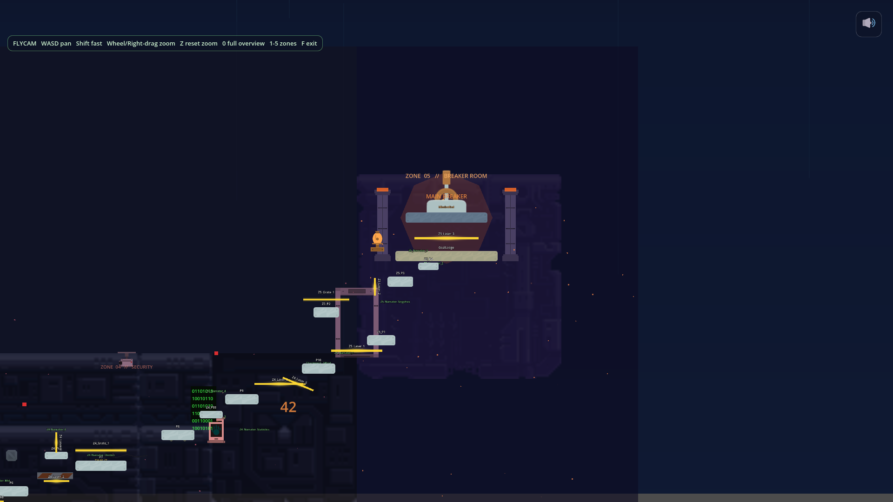

Day 8 of building a game I don't know how to build
Quick update on the side project. I started a 2D vector platformer called Pull the Plug. It is day 8 and you can play it in a browser, on your phone, right now, at pull-the-plug.feepok.workers.dev. Three missions, a working narrator, ambient audio that reacts to where you stand. I am not coding it. Claude is doing the typing. I am directing.

This is a diary post about what has happened so far, mostly so I can come back later and remember. There is no list of takeaways at the bottom. I am still in the middle of it.
What it is
One-button vertical platformer. You climb up six pieces of AI infrastructure, one mission each, and pull the plug at the top. Calm narrator the whole time who does not want you to do this and has reasons. Around mission four the calm starts to crack. That is the idea.
Two rules I locked on day one and refuse to renegotiate:
- The jump has to feel perfect. If the jump is mid, everything else is wasted.
- The narrator is the moat. Generic narrator, generic game.
Everything else can move.
The engine
Godot 4 with GDScript. The reasoning, written down on day one so I cannot second-guess it later: free, no royalties, GDScript is Python-ish so Claude writes clean code in it, it is vector-native which matches the art direction, and it exports to web, Windows, iOS, Android out of one codebase. The web export is what closed it. Within a week the game was running on my phone at a public URL. Every git push triggers a deploy in about 30 seconds. I send the link to a friend, they play it, they tell me what is broken. The loop is short.

The thing that cost me a week
Early on Claude would write platform positions and I would have no idea if they were right. "Z2 Climb C at x=8920, y=460." Cool. Is that on screen. Will the player reach it. Are the lasers in front of the wall or behind it. I would commit, push, refresh the game on my phone, and find a platform floating above the camera or two of them stacked into one or a laser clipping through the landing zone.
The fix is dumb in hindsight. Two rules: screenshot the current state before changing geometry, screenshot the new state after. Then actually look at them. I also built a fly camera autoload. Press F to fly around. Press 0 to see the whole mission. Press 1 through 7 to jump to zones. Gameplay pauses while you fly so you can wander without dying.
Now Claude takes the screenshots, reads them back, and tells me what looks wrong before we commit. This should have been step one. I lost about a week to "Claude said the platform was there but it wasn't."
How the art happened
I cannot draw either, so art was always going to be assembled.
First I dropped in Kenney asset packs. Free, clean, vector and pixel sets. Made the game look like a Godot tutorial.
Then I started using Recraft V4, an AI image tool that outputs SVG instead of PNG. Same prompt suffix every time: pure black silhouette, flat vector, no facial features, inspired by Alto's Odyssey and Inside. Got 11 silhouettes for about 210 credits. Player in a hood, a fan housing, a separate fan blade, grates, skyline pieces. The fan was the funny one. Once the housing and blade were separate SVGs, the housing stopped wobbling when the blade spun. A bug I had been ignoring for days just vanished.

Then I locked something I called the Three Plane Rule. Background plane gets desaturated raster props. Gameplay plane stays flat vector. UI plane is its own world. The second I mixed Kenney pixel props with silhouettes on the same plane, the game looked like a yard sale.
Then I did a thing I regret a little. I spent about a dollar on FAL Recraft V3 painterly mode, generating 22 full backdrops for Mission 2. Individually the images were beautiful. Composed together in a scene they looked like wallpaper. Every backdrop had its own internal composition fighting whatever silhouette I tried to put in front of it.
I scrapped them. Told Claude, screw image generation for backdrops, rebuild this in Polygon2D and lights. One session later Mission 2 was rebuilt from scratch out of Godot primitives. Gradient skies, polygons for cave walls, radial light pools, particle drips and steam, hand-placed SVG silhouettes per zone. It looked roughly ten times better. Not because Polygon2D is some magic thing. Because when you hand-place every shape, every shape knows what every other shape is doing. The AI backdrops just did not know about each other.
The character I deleted
I had three pixel character rigs from an itch pack. Homeless 1, 2, 3. I wanted a painterly fourth to A/B against them. Ran Homeless 3 through fal-ai with the painterly Recraft V3 prompt, generated 46 source files, built a sprite sheet, wired it up, pressed C in the elevator to cycle to slot 4.
It looked like a tourist standing next to the other three. Not because painterly art is bad. Because painterly did not match the contour language of the other rigs. So I deleted it. 20 sheets, 46 source files, the whole FAL character pilot toolchain, about 1,800 lines, gone. Default went back to Homeless 3.
That one stung because the work was real. Then the next day I vectorized Homeless 3 by hand, and Homeless 1, in the same silhouette direction as the rest of the world. Six slots in the C-cycle now, three pixel and three vector. The vector ones feel like the game. The pixel ones feel like dev tools. I will probably ship vector.
The component toolkit
This is the part I did not know to ask for on day one and it kind of emerged.
Every mechanic in the game is a .tscn file with exports. Drop it into a scene, set the numbers in the inspector, done. The list as of tonight, off the top of my head: Platform, Ramp, Hazard with pulse mode, CoolingFan, ElectrifiedGrate, LaserBeam, BouncePad, Conveyor, CrumblingPlatform, Rope, WindGust, PuzzleValve and PuzzleHatch, PressurePlate, SwingingCable, ZeroGZone, plus the narrator pieces. Around 15 things.
When I want a wind gust pushing the player left during a rightward leap, I open the scene, drag a WindGust into the zone, set force to 220 px per second left, set a pulse of 1.6 on and 1.0 off, save. Done. The component does the math. If a number feels wrong I do not refactor. I open the inspector and change the number.
A small idea I keep using
Every mission has an off-screen node parked at something like (-3500, -1500). It contains one of every sprite used in that mission, labeled. When I want to place a moss bush in Mission 2, I do not ask Claude for coordinates. I fly the camera over to that node, click the moss bush, hit Ctrl-D, drag it where I want. The whole class of "Claude computed the wrong coordinate" bug is just gone, because Claude is not doing placement anymore. I am.
I call it the asset palette. It is the best small idea I have had on this project.
The audio surprise
I had a Freesound API key and I figured I would drop two ambient drone tracks into each mission. Drone under, slow piano on top, very Sakamoto. That worked. The missions sounded the same as each other.
So I tried something else. One AudioStreamGenerator per mission, composing four to five voices at once in a per-frame loop. Mission 1 gets rain hiss, drone, HVAC, server fan whine, electric crackle. Mission 2 is sub-bass rumble, drips, hiss, flood bubbles, steam. Mission 3 has mains hum, pylon wind, arc crackle, distant transformer zap. Then the mission script writes knobs into the generator per frame based on where the player is. Walk past a server fan, the fan whine goes up. Walk near a grate, crackle density jumps. In Mission 2 the flood bubbles grow as the water rises during the climax.
It is not music. It is environment. You can stand in one corner of Mission 1 and hear a different room than if you stand in another. I did not know this was something I could ask for until I asked.
The narrator
This is the part I am still scared of.
The narrator currently shows pre-baked text. The Mission 2 lines took a full session to nail because the rule is the narrator is paternal and disappointed, never threatening, never sarcastic. The player has to feel that without being told.
Sample line, the moment you reach the master valve:
Slowly, now. Both hands. The cities upstairs are about to notice.

What I have not built yet is the live LLM and TTS pipeline. ElevenLabs voice, a Cloudflare Worker calling Claude per beat. The architecture is sketched, the autoload exists with a placeholder, but I have not pulled the trigger because every beat costs real money and I want pre-baked content across every mission first, before I start paying per test. Mission 2 still has zero narrator triggers across seven zones. The narrator is the whole moat and one mission is silent. That is a hole.
The dev tools that paid for themselves
A pile of one-key shortcuts has done more for my speed than any single design decision. None of these were on day-one plans. They all started as "ugh, I keep doing this by hand" and turned into 50 lines of code that I now cannot live without. In rough order of how often I press them:
F to fly. Press F in any running mission and the camera detaches from the player. Gameplay pauses. WASD pans, Shift goes fast, wheel zooms, Z resets. Press 0 and the whole 9000 by 2200 map fits on one screen. Press 1 through 5 to frame a specific zone. I built this the day I realized I was scrolling for thirty seconds just to look at a thing.
G for god mode. Same idea but inside gameplay. Press G and the player no-clips through walls, ignores gravity, ignores hazards, ignores death. Fly with WASD, press G again to drop back into normal physics wherever you are. I do not playtest without it on anymore. The amount of time I used to spend dying my way to the bug is embarrassing.
K drops a checkpoint. Stand somewhere in a running mission, press K, a checkpoint instantiates at that position AND a new line gets written into the mission's .tscn file so it persists. No editor toggle, no copy-pasting coordinates from a debug print. Once this existed, I stopped designing checkpoint placement by reading numbers. I walk the level and tap K when it feels right.
P shoots a screenshot. Auto-numbered, never overwrites, dumped into a folder Claude can read directly. The workflow that fell out of this is the one I keep recommending to people: take five or six shots through a zone in one playthrough, then ask Claude to look at "the last five" and tell me what looks off. Way faster than the alternative, which is Claude taking its own screenshot, sending it, me reading the response, asking for the next, repeat. Batching feedback was the unlock.
C cycles characters. Six slots. Three pixel rigs from the asset pack, three I vectorized to match the silhouette language. Useful when I want to A/B which one feels like it belongs in the world. Spoiler, it is not the pixel ones.
A CMS for the narrator. A tiny offline HTML page that lists every narrator line in the game, grouped by mission, with status pills. LIVE means it is in the game and approved. SACRED means I refuse to renegotiate it. MISSING means there is a designed beat and no text yet. ZERO is the screaming-red dashed-border one, meaning a whole zone has no narrator at all. I use it to know what to write next, and to remember why a line cannot change.
A custom Claude skill for parallax backgrounds. A skill, in this context, is a little chunk of locked rules and references that Claude reads automatically when the task matches. I made one called godot-2d-parallax-background. It knows the palette and scroll axis of every mission and zone in the game. I type "design M3 Z2" and out comes a scene scaffold with the right motion_scale numbers, the right z_index ordering for the Three Plane Rule, an asset checklist pointing at the correct art folders, and a signature element close to camera. No interview, no re-explaining. The half-afternoon to write the skill paid back the first time I needed a new background.
The Three Plane Rule itself. Background plane gets desaturated raster. Gameplay plane stays flat vector. UI plane is its own world. It is not a tool, it is a rule, but it functions like a tool because once it is locked, every art decision has a yes-or-no test. Mixing the planes is what made the game look like a yard sale before I locked this.
The off-screen asset palette. Covered up there in its own section. Every mission has one. It is the thing I keep telling people about when they ask how I work with Claude on art-heavy stuff.
The pattern across all of these is the same. Anything I do more than twice gets a keystroke. Anything Claude asks me twice gets baked into a skill, a rule, or a reference doc. The game gets built by removing the parts of the loop where I was thinking about the loop.
What's next
Tomorrow is an end-to-end playtest on the live deployment. Walk every mission, listen to whether the procedural audio actually sounds different across the three or whether it has all averaged out, check whether the new components I shipped overnight are even discoverable without help.
Then probably Mission 2 narrator beats, because the silence there is louder than anything else.
The live LLM pipeline, maybe. I keep finding reasons to delay it. Some of them are good.
That is day 8. If you want to try it, the link is at the top. If something feels broken, tell me, because that is how I find out.
Comments
Anyone can post. Captcha keeps the bots out. No links allowed.